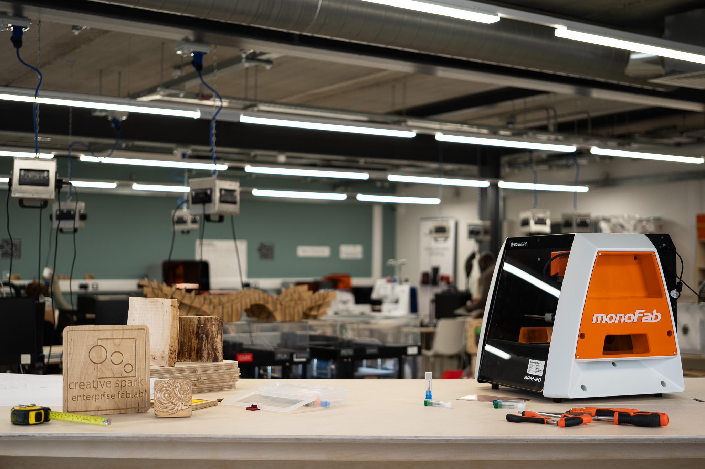

Home¶
Creative Spark Enterprise Fablab!¶

Welcome to our node site!¶
We are a technical prototyping platform based at Creative Spark in Dundalk, Co. Louth, Ireland. Our 200+ sq. meter facility is fully equipped with digital fabrication machinery, power tools, and dedicated workspaces to support makers, designers, and entrepreneurs.
Together with the Creative Spark Print Studio and Downtown Hub, the Enterprise FabLab are part of Creative Spark vibrant community — providing space, delivering support, and connecting clusters to drive innovation and collaboration.